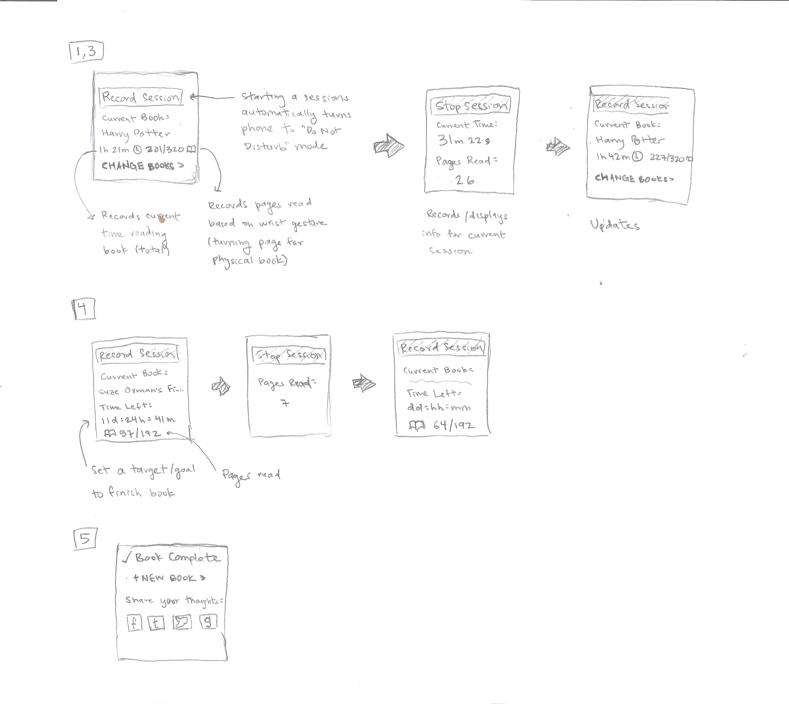

BookWurm
Reading on the Go
Stats
Duration
Winter 2017 (Jan. to Mar.)
Roles
User Researcher, UX Designer, UI Designer, Product Designer
Team
Brandyn Bayes, Christopher Chen & Danial Chowdhry
Problem
Many avid readers find themselves reading less due to busy lifestyles. We wanted to create a unique solution that encouraged people to read more as well as have a way to track how much they read. As a major source of distractions, a goal early on was to avoid relying too heavily on the mobile platform.
Solution
A balance between the utility offered from creating a smartphone application and the possible distractions that smartphones cause was something that our team needed to address early on. Our solution was a Smart Bookmark which readers can store in their books and "snap" onto their wrist (similar to snap bracelets) to log a reading session.
With the two devices working in tandem, the mobile application offered in-depth statistics while the bookmark offered a distraction-free method of recording information.
Objectives
- Design/create a unique product that goes beyond a simple mobile application.
- Create a product that is unobtrusive and requires minimal manual user input, therefore minimizing distractions.

Prompt
The high level scope of this project was focused on addressing the discontinuity between technological distractions and disrupted reading habits. There were two assumptions that we had going into the ideation phase; that people:
- Have a desire to read on a daily (or near daily) basis
- have difficulty finding the time to do so consistently
Step 1 Brainstorm
There were two aspects to consider during this phase:
- Way to help people find time to read.
- Aid people in deciding what book to read next.
For the first consideration, we wanted to take into account that due to technology, people have a greater tendency to read in short sprints. For the latter consideration, we kept in mind that there is an active trend towards ordering books online, or purchasing them on digital readers.
While this trend has made it easier to access books, it has considerably limited a person’s ability to peruse the book prior to purchase, the ability to compare two or more books, and forcing a person to search through a number of books to find what they are looking for.
Brainstorming
To cast a wide net, our team sat down and generated 5 to 10 different ideas related to the following 5 aspects.
- Forms: types of technology on which a design might be developed (e.g., desktop, phone/tablet, sensor, watch, wearable).
- Data: types of data a design might track or help a person track
- Features: a specific capability a design might have.
- Tasks: what a person might accomplish with a design.
- Social Interactions: types of social interactions and situations a design might engage or support
The goal was to explore the space of possibilities, not attempt to polish some particular possibility. After all the squares were finished, we spent some time discussing ideas that we thought were promising and worth additonal consideration.
Step 2 Research Plan
Originally, our team planned on conducting a diary study to gather data on students who are avid readers. We initially considered diary studies over an interview because interviews are subject to recall bias. A diary study would provide much more precise data, as people would be recording their reading time and environment as it occurs rather than recalling after.
Target Audience
The target audience we chose to focus on were students from a university, specifically, the University of Washington. Students were an optimal population due to busy schedules.
As our project is focused mainly on helping users find time to read, the research phase focused on collecting data from students who have been successful in establishing a reading habit. This was to gain insight on how these individuals were able to maintain a leisure reading habit while balancing other engagements such as school and work.
Interviews
Due to time constraints, we switched to conducting user interviews rather than finding participants to participate in a diary study.
The interview was designed to get a better understanding of people's current reading habits. This included finding out the types of books people liked to read, what medium they like (physical book, Kindle, etc.), how long and how often people read for, when do they read, and other information. The goal of the user interviews was to build a more comprehensive understanding of the reading habits of people who managed to find time to read with a busy lifestyle. This included students and those who had full time jobs.
Step 3 Research Results
Summary of Findings
Through our research and interviews, we were able to learn more about our participants regarding their behavior towards reading. Although the age of technology has allowed reading to be more convenient on personal devices, people still enjoy reading through physical mediums. It was interesting to understand how it has affected the participants however, for example they commonly view cell phones as a distraction to their reading, whereas a decade ago this would not have been a problem. In addition, our participants commonly find new books to read online, as they like to learn about new topics in order to keep up with certain trends.
Themes
Reading Before Bed
Although some also stated that they liked to read while taking public transportation in order to pass time, the idea of reading before bed resonated strongly with all participants interviewed. This leads to suggest that reading before or after an important event in the day would be a great way to enforce a strong habit of reading.
Preference of Physical Books and Phones as a Distraction
While one participant stated that they usually read on their phone nowadays, all users expressed a preference toward physical books and cited phones as a major distraction to their reading. This suggests that reading a physical book over using an electronic device could help promote focus on the reading. A common problem was that phones caused a distraction, but there was no method for our participants to re-engage in their books.
Getting Recommendations From Friends
All participants stated that they often get ideas on what to read next from their friends. This trend suggests that if there is a social aspect to reading, users might be inclined to read more. One participant also stated that Goodreads played a part in her reading habits. Adding a social aspect to the design might over complicate the design and cause it to lose its original focus, so it’s important to approach this idea carefully.
Step 4 Ideation
Proposed Design Sketches
Wearable
A wearable device (Apple watch in our case) for reading is something that would be simple and not be too intrusive on the user. A user is able to interact with the wearable during a reading session easily through their wrist without being distracted by phone notifications. Since most watches are designed to complement phones, data can be sent and stored on the phone.
Mobile App
Even though many participants during our interviews noted that cell phone are a distraction, a mobile app allows for the most flexible tracking and sharing functionality. It can present many different tasks, and smartphones are something that people will bring along with them everywhere they go. Our mobile app to track the time spent reading and also enable “Do Not Disturb” mode, provide news and media recommendations, share books with your friends, and reading a goal number of books within a period of time.
Smart Bookbag
The concept of a smart bookbag is designed around being able to seamlessly collect information about the books that a person carries, as well as for how long they read. It is paired with a mobile app to deliver notifications and reminders about grabbing books, and a web app for deeper communication with friends. The smart bookbag is able to detect the books that it contains, is able to communicate wirelessly to convey how long a person reads for, and is able to automatically mute the person’s phone so as to limit potentially distracting notifications.
Selected Design
For our chosen design, we decided that creating a Smart Bookmark would be optimal choice. The design we selected took from the best aspects of each of the proposed sketches that we put forward. This bookmark brings immediate availability of a smartwatch, the deep details of the mobile app, made possible through a companion app, and the unintrusive nature the backpack.
This design will utilize a form similar to the “snap bracelets”, which sit flat when inside of a book, but can be wrapper around a person’s wrist for storage while reading. These two states provide a consistent way in which to gather data from the device regarding time spent reading. The mobile app would allow users to store information about reaching a certain long term reading goal. The smart bookmark allows a user to track the current length of their current reading session.
Step 5 Storyboards
Step 6 Paper Prototype
Full Initial Paper Prototype
We created rough approximations of the potential interfaces for the mobile application. This included creating any screens we felt a user might encounter during the usability tests.
Initial User Flow
With a paper prototype created, it provided the first look at the user flow. This helped to identify and rectify any interactions that were overly complicated before moving onto user testing.
Bookmark Prototype
Intial concept of the interface for the Smart Bookmark. Interfaces includes displaying a page count and total reading time for the book.

Step 7 Heuristic Eval
Heuristic Evaluation Feedback
Before moving onto user testing, another team conducted a heuristic evaluation while recording the severity of the issue (how much it affects usability) and ease (how easily the problem could be fixed).
Prototype Changes
Based on the feedback, we made the appropriate changes to our prototype. An example is shown below of an altered screen.
In this instance, our heuristic evaluators commented that they were unable to quickly identify what books were in their library, or even how they might go about switching the bookmark to another book. For this, we made two significant changes. The first came in the form in introducing an updated menu, with one of the primary items being a library link. The second was to introduce quick links on the front page, allowing for participants to switch between recent books.
Step 8 Usability Testing
We had one individual read the script and tasks to the participant, while another was responsible for performing the necessary “wizard of oz” tasks. The additional two team members took notes during the process. The participant was asked to think aloud while walking through the tasks, which included:
- Syncing the bookmark to the application
- Skipping adding a book so they could explore the application
- Adding a new book
- Check upon an existing goal
- Check books that have been read
- Correct information about a mistimed reading session
Similar to the heuristic evaluation, we recorded what problems the participant encountered and the percieved severity to facilitate changes to the prototype. These changes were made between each usability test.
Step 9 Digital Mockup
Main Screens
Settings include an auto Do Not Disturb mode when the Smart Bookmark is activated to decrease distractions while reading.
Adding Books
Multiple methods to add books to a user's library to make it as quick and easy as possible.
Reading Sessions
Start new goals by viewing the detailed information on a book. The information is automatically synced with the bookmark.
Goals (Book Recommendations)
For the social aspect, users are able to view and add their own goals and collections. This is a way for users to discover new books that others are reading. The books in a collection is automatically added when added as a goal. Goals can also track multiple books.
Step 10 Poster
As part of the deliverables, I was tasked with designing a poster to showcase our product. The poster had specific criteria regarding what information needed to be included (e.g. a problem statement, a value proposition, key funtionality, and an overview of the design process and iteration).